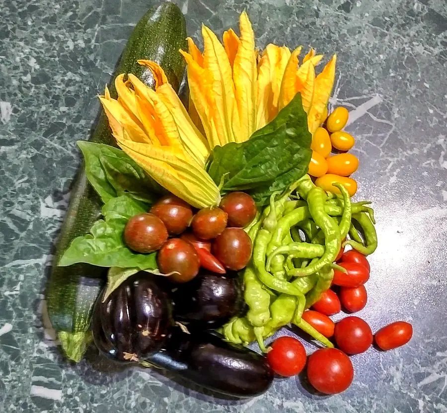
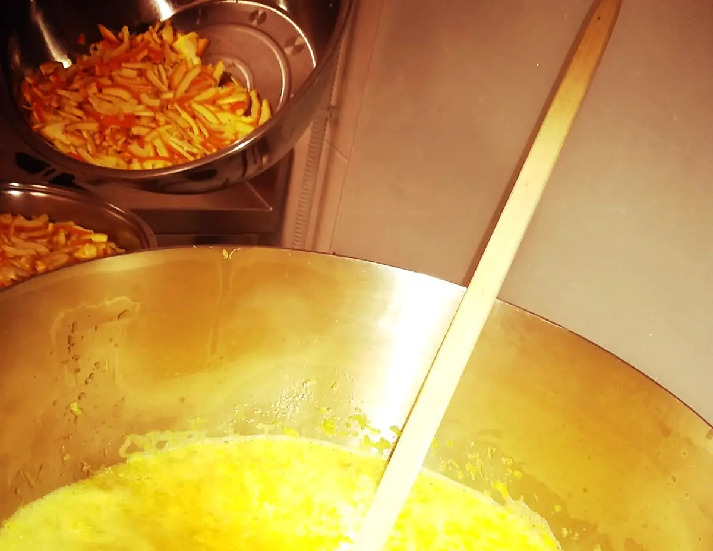
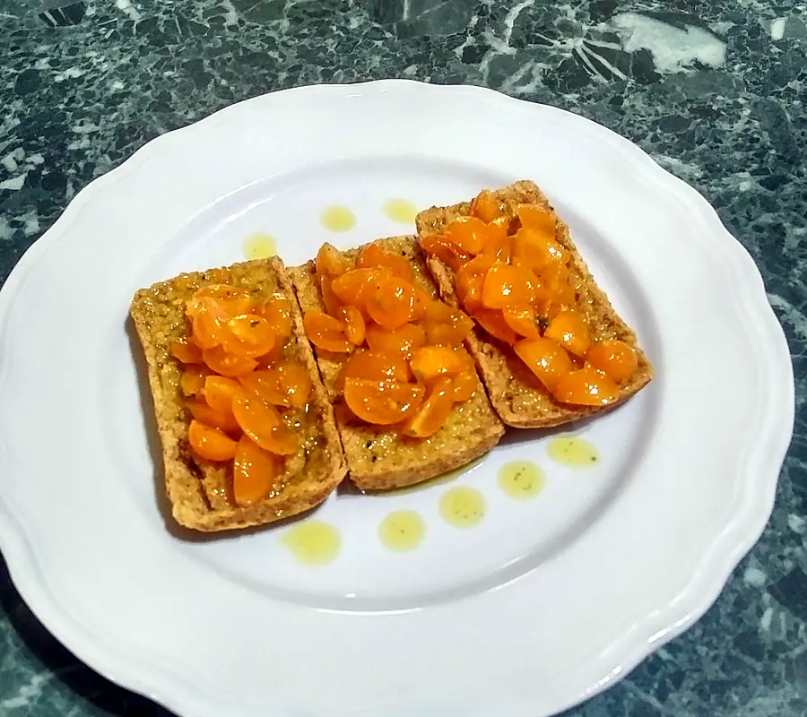
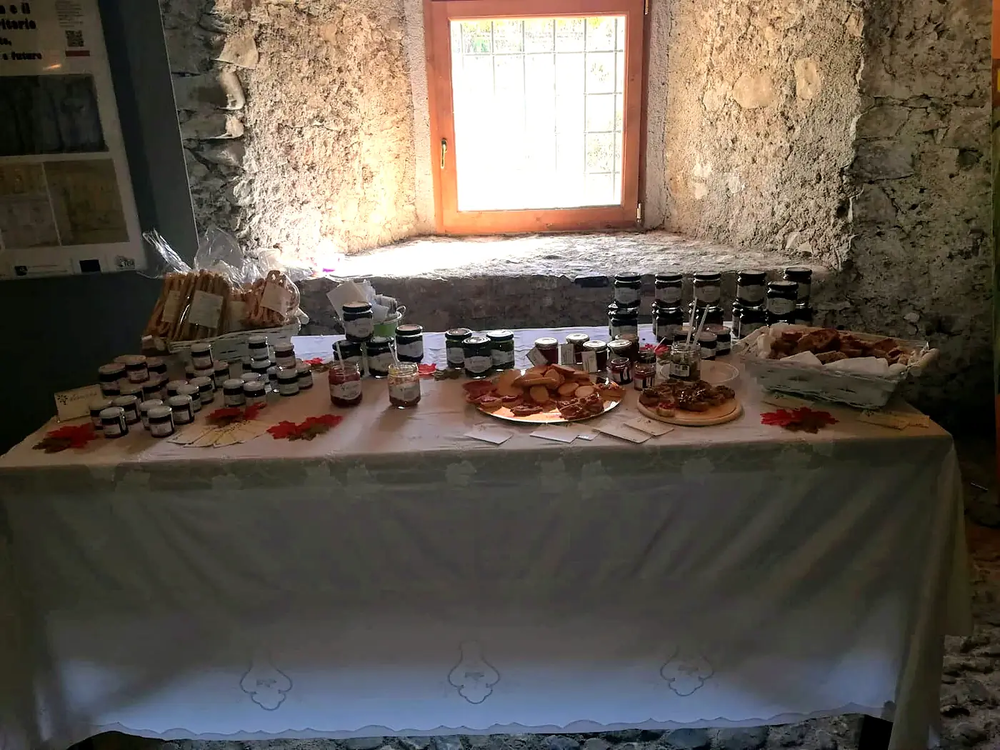

La pasta fatta a mano
Farina, acqua e le mani. Si impasta, si tira e si dà forma alla pasta come si fa in famiglia. Quello che prepari lo porti a casa.
Prenota su WhatsAppSi impasta, si cucina e si assaggia, con le ricette di casa e i prodotti dell'azienda. Aperti anche a chi non dorme da noi. Si parla italiano.


Farina, acqua e le mani. Si impasta, si tira e si dà forma alla pasta come si fa in famiglia. Quello che prepari lo porti a casa.
Prenota su WhatsApp
Le polpette come si fanno qui, con i prodotti e i sughi dell'azienda. Si cucina insieme e poi si mangia.
Prenota su WhatsApp
Nella saletta con le pareti in pietra si apparecchia con composte, conserve e bruschette. Si assaggia con calma, poi si sceglie cosa portare a casa.
Prenota su WhatsAppSu WhatsApp, con il laboratorio che ti interessa, il giorno e quante persone siete.
Orario, posti e costo. I laboratori si fanno solo su prenotazione.
Via Padre Giovanni Semeria, Padula. Alla fine, se vuoi, passi dallo spaccio.
Camere, laboratori, prodotti: risponde lei, su WhatsApp o al telefono.